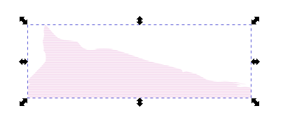
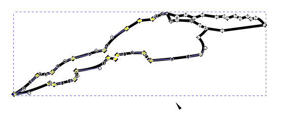
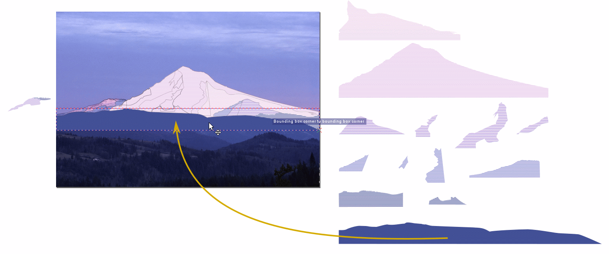
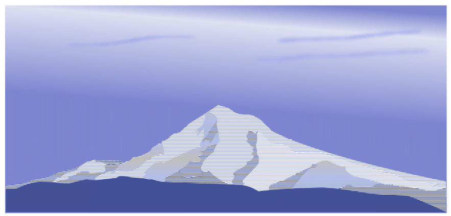

Tutorial 18 — Using Patterns to Create an Engraving
Effect
Inkscape’s
Patterns feature allows you to fill an empty space with different
geometric shapes, such as straight, curved, and zig-zag lines. With line
patterns, you can make your artwork look like a piece of intaglio printing
or engraving. You can combine line patterns with background images,
incorporate gradients and blurs, and mask imported bitmap images that
produces a composite picture of multi-dimensional breadth and depth to
capture the viewer’s attention.
In this lesson, you’ll learn how to do the following:
Create line grids using the Patterns feature to simulate engraving.
Blur edges of bitmap images using masking to produce vignettes.
Embed bitmap images into a host Inkscape file.
Create a background cloud image using a gradient and blurred brush
strokes.
Combining Artwork
In the previous tutorial (Tutorial 17), you combined Inkscape artwork with
images from other graphics, producing a mult-faceted composite image for a
poster. In this tutorial, you’ll continue combining continuous-tone
photographs with vector-based line art.
You will open an Inkscape file that contains a bitmap image of a mountain
(Mt. Hood in the state of Oregon, USA) with a map overlay that defines areas
of lightness and darkness. You will separate and fill each individual area
with a different line pattern to simulate horizontal line engraving of light
and dark areas. In another Inkscape file, you will import bitmap images of
rare Oregon orchid flowers brought in from the Internet and create vignettes
out of them. Finally, you will create a background image of a lightly clouded
sky with a linear gradient and a few blurred brush strokes to imitate
separate, distant individual clouds. You will combine all of these images
into one to create a composite poster image.
Getting Started
Download art file Tutorial18_end.svg
and store it in a convenient location.
Tutorial 18 finished artwork.
Start Inkscape.
Choose View > Zoom > Zoom Out to make the finished artwork
smaller, adjust the window size, and leave it on-screen as you work. (Move
the artwork where you want it in the window.) If you don’t want to
leave the image open, choose File > Close.
Now download the starting art file Tutorial18_start.svg
and store it in a convenient location.
Open the start file to begin the lesson.
Choose File > Open, and open the Tutorial18_start.svg file.
Tutorial 18 starting art file: Mt. Hood at
Sunrise.
Areas of different shading have been delineated on the mountain that will
contain different pattern fills. The final effect is to produce an image
simulating intaglio printing or engraving with horizontal lines.
Intaglio Printing
Intaglio is the family of printing and printmaking techniques
where an image is acid-etched or mechanically cut into a surface, usually
of metal, such as copper or zinc. The lines, curves, and other cuts hold
ink which is then transferred onto a page. When a sharp cutting
instrument, like a burin (a strong steel needle meant for digging
grooves and pits into a metal plate) is used to create the image
prototype, this particular method of creating an image is called
engraving. An example of line engraving technique in action and a
finished piece of artwork are shown on the right.
Engraving with a burin.
Engraving of a 19th Century Russian
balalaika.
Separating Areas of Different Shading
At first glance, Mt. Hood is a mesh (and a mess) of overlapping pieces of
slope. Each piece will contain its own color of engraving. You will
group-select the central portion of the mountain that contains the map, make
a duplicate of the map and move it down from the image. You will then make a
duplicate of that map and disassemble it into its various parts for
individual treatment.
With the Select Tool (), draw a rectangle around the
mapped area to group-select all the map pieces. Make sure all pieces are
within the rectangle. (For review on group-selecting, see Tutorial 2,
Using the Select Tool.)
Group-selecting the mapped areas of the mountain
image.
Release the left mouse button. Each area is enclosed inside its own
bounding box.
Group-selected areas showing individual bounding
boxes.
With the map still selected, press <Ctrl>-D to duplicate the
map. The borders become darker indicating that each area border has
another lying directly ontop of it.
Duplicating the mapped area borders.
With the duplicate map still selected, move it down from the
mountain image.
Moving the map duplicate.
Now, with the duplicate map still selected, make yet another duplicate
using <Ctrl>-D, drag it down, and then dissect it into its various
pieces by selecting each piece and moving it out so you can see its
individual geometry. Each piece of the jigsaw puzzle is to have its own
color of engraving.
Separating individual map areas.
Creating a Pattern Palette for the Engraving Effect
Engraving colors into a piece of artwork can be a delicate and tricky
endeavor. Engraving color fills are alternate colored and white lines and
curves, resulting from the transfer of the ink in the line and curve grooves
dug into the metal engraving plate interlayered with white lines from the
raised areas between the grooves. You see an average color when you stand back
from the work, and alternating colored and white lines when you look more
closely, as shown below.
An engraving by Alphonse de Neuville from Jules Verne's 2000
Leagues Under the Sea.
A technique that helps in keeping engraved fills equivalent in lightness
(or darkness) to an original color involves making the starting color for the
colored lines darker than the original. Neighboring white lines can create
an average brightness that mimics the original color to satisfaction. It can
take a certain amount of experimentation to get the color balance just right.
In this tutorial, you will be provided reasonable starting colors to create
your engraving palette.
The figure below shows a palette of six colors to the right of the
artwork. The bottommost color will be used as a solid fill for the
bottommost area of hill topography at the base of Mt. Hood. All other
colors will serve as the base color for an engraving grid. Each rectangle of
color has its corresponding hexadecimal code, or hex code, for short, above
it. The final ff on each code stands for its opacity, which is 100%
in each instance.
Selecting palette colors.
Note how the colors become light as you go from bottom to top. They
are to represent areas of distance and shadow, in keeping with how mountains
can appear lighter and bluer as they recede into the distance.
You will now create the engraving grid from the dark blue rectangle
second from the bottom.
Select and duplicate the dark blue rectangle with <Ctrl>-D, and
move the duplicate off to the side.
Moving the duplicate dark blue rectangle.
Make a second duplicate rectangle and move it down to below the first
duplicate.
Activate the Snap Tools toolbar if it isn’t active already, and
click on the Enable snapping (%) (),
Snap bounding boxes (), and Snap bounding
box corners () icons.
With the snap tools activated, position the lower dark blue duplicate
rectangle so that it is exactly in line with the upper duplicate. It will
snap into place.
Moving the second duplicate dark rectangle
down.
With the lower rectangle still selected, click on the white color
swatch in the Color palette to give the rectangle a white color fill.
Changing the fill color of the lower rectangle from dark
blue to white.
<Shift>-click the upper rectangle to group-select it.
<Shift>-clicking the upper rectangle to group-select
it.
Press <Ctrl>-G to group the two selected rectangles.
Grouping the two selected rectangles.
Choose Object > Pattern > Objects to Pattern to convert the
grouped rectangular object into a pattern template.
Click on the Node tool () in the toolbox
Note there there is an × in the upper left square handle of the
rectangle. This × is the reference point or origin for the Pattern
tool, much like the 0 on a number line.
Activating the Node tool.
With the Node tool () still active, click-drag the × up a little
bit from its original location. A circle and square handle move up along
with the ×.
The circular handle, which you won't use, governs the angle
at which the lines (or any other pattern figure) are oriented. You'll keep
the lines horizontal.
The square handle, however, governs how thick or thin the grid lines are.
You can move the square up or down, and the two rectangles that make up the
pattern template grow either thicker or thinner, depending upon which
direction you move the square. If there were vertical lines, moving the
square left or right would change their thickness. In this case, there are
no vertical lines, so we don’t need to be concerned about them.
Moving the Pattern tool up.
Hover the Node tool () over the square handle. It turns red to show that
it is active and ready for manipulation.
Hovering over the Pattern tool square.
Keeping the Node tool on the square handle (it should stay red so
long as you hover over it), drag it up toward the Patter tool reference
handle.
Two things happen as the square approaches the ×. First of all,
the two rectangles become thinner and more appear in the space that
originally contained two. Also, the circular handle approaches the reference
handle, moving along a horizontal line. This is what you want in making
your engraving grids.
Stop a short distance away from the reference point, and move the red
square up toward the circle. The grid lines continue to become thinner. Stop
when you feel a reasonable thinness has been reached.
By keeping the Pattern tool reference handle, square grid thickness
handle, and the circular grid orientation handle is close proximity, you can
keep close tabs (pun intentional) on what you doing with the tool.
Moving the Pattern tool.
Select the Select Tool () and move the newly created
engraving grid to the side.
Repeat Steps 2 to 14 to create engraving grids for the remaining
color rectangles.
Organize your engraving grids so that you have a palette of colored
grids that you can use in selecting colors for each area of the mountain
map &dlquo;jig-saw puzzle.”
Completed engraving grid palette.
There is more about Patterns in the Inkscape Manual at Help > Inkscape
Manual > 10. Attributes > Fill and Stroke Paint > Patterns.
Creating the Engraving Effect
You have now created an engraving palette. Your next step is to put it to
good use. In this section, you will use Inkscape’s Clip tool to turn
each area into an engraving.
Determine which shapes should have lighter or darker grids and
organize them by shade category. Below, shapes are categorized from lightest
shading at the top row to the solid blue at the bottom. Their associated
engraving grid is on the right of each row. The first shape in the second
row from the top is a composite shape and will receive its own individual
treatment.
Matching map shapes to grid colors.
Make a duplicate of the top jigsaw puzzle shape (<Ctrl>-D)
and move it to a place where you can work with it without having other
items interfere. Make a duplicate of its associated engraving grid and
enlarge it so that the jigsaw puzzle piece totally fits inside. Note that
the grid retains its spacing when you resize its enclosing rectangle.
Duplicate engraving grid and associated
shape.
Move the puzzle shape so it lies completely ontop of the engraving
grid.
Moving the top shape over its enlarged grid.
With the Select Tool (), marquee-select both the shape
and the rectangle.
Marquee-selecting the top shape and its associated
grid.
Both the shape and rectangle should now have their own bounding boxes
to show that they have been group-selected.
Shape and grid group-selected.
Choose Object > Clip > Set. The outline of the shape disappears
along with the outer portion of the engraving rectangle. Only that part of
the rectangle inside the shape remains, which is what you want.

Top shape engraved.
This figure is the lightest one in the artwork. All others are to be
darker to represent shadowing and less snow cover.
Repeat Steps 2 to 6 for the remaining shapes and their associated
engraving grids.
All areas engraved.
The composite shape mentioned in Step 1 is not a grouped shape. You
will use the original composite shape to make one colored engraving and use
a duplicate to delete a portion, leaving the other portion to be paired with
a grid of a different color.
The left-hand portion of the composite shape will receive a light color
grid fill, and the right-hand portion will receive a darker grid fill,
as hinted at by the figure below.
Composite area and grids to use.
Select the composite shape with the Select tool (), make
a duplicate shape with <Ctrl>-D, and move the duplicate to below the
original shape.
Composite shape and duplicate.
Click on the Node tool () in the toolbox. All nodes in the composite
shape border appear.
The composite selected and with the Node tool
activated.
Marquee-select those nodes on the left-hand shape that are not
on the right-hand shape.
First selection of nodes with the Node tool.
Release the mouse key. Those nodes that are within the marquee are
highlighted. The remaining nodes on the border of the right-hand shape are
still grey, meaning that they have not been selected.

First swipe with the Node tool.
Click on the Delete segment between two non-endpoint nodes
icon () in
the Node Tool toolbar. Most of the left-hand shape is deleted. There are
only a couple of branches left of the border which you will delete
one-by-one.
Deleting line segments.
Click on the bottommost line segment of the figure with the Node tool
()
to select it. Note how its two endpoints become highlighted.
Deleting an individual line segment.
Click on the Delete segment between two non-endpoint nodes
icon () in
the Node Tool toolbar to delete the segment.
Do the same for the remaining segments until only the right-hand shape
remains.
Remaining line segments after deleting.
Click off the artwork to deselect it.
Shape with nodes hidden.
Now move the complete composite shape over its engraving grid and
the small right-hand shape over its darker-colored grid in preparation
for clipping.
Preparing the shapes and engraving grids for
clipping.
Select each shape-grid pair separately and choose Object > Clip
> Set to apply the clipping function. The Clip function doesn’t
work when you apply it on both pairs at the same time.
Clipping the two composite shape parts.
You will now position the smaller, darker shape ontop of the
larger lighter-colored shape using the Snap tool. If the Snap Tool toolbar
isn’t active, make it visible and select the Enable snapping
(%) (), Snap bounding boxes (), and Snap bounding box corners () icons. The Snap tool will enable you to position the
darker shape ontop of the other lighter one with precision. The upper
shape will snap into place and you will see a textbox informing you that
bounding box corners have snapped together.
Group the composite shape by group-selecting it and press
<Ctrl>-G. It will be easy to move as a single unit as a result.
Assembling composite parts.
You have made all the pieces that will fit together to make Mt. Hood
as a piece of engraving artwork. Now it is time to assemble them.
All areas collected for reassembling the
mountain.
Assembling the Pieces of Engraving Work
If you enjoy putting together jigsaw puzzles, then you will love this
section. Here, you will take all the pieces of Mt. Hood that you drew and fit
them together much as you would a jigsaw puzzle. The difference is that you
will also determine where each piece is situated in the image stack. Some
pieces need to be partially situated underneath other pieces in the image
stack to give the impression of depth or of one part of the mountain casting a
shadow on another. It will be as if you were working with a three-dimensional
puzzle!
A good first step is to take the largest piece of the mountain and
make it the background upon which all the other pieces will lie.
Make the Snap Tool toolbar active and click on the Enable snapping
(%) (), Snap bounding boxes (), and Snap bounding box corners () icons.
Move or copy the piece that contains the summit (the biggest piece) and
move it so that it fits exactly inside the black outline that has the same
shape. A tooltip box will inform you when positioning is exact.
Positioning the first and largest piece of the mountain
puzzle on the figure.
You will now position the piece in a good place in the image stack.
With the puzzle piece still selected, click on the Raise selection to
top icon () to put the piece at the top of the
image stack.
Press the Lower selection one step icon () several times. As you press the Lower selection one
step icon, the black border of a different puzzle piece will appear as
the selected piece is put underneath it in the image stack.
When the puzzle piece disappears, you have put it underneath the original
background picture. You know where the piece is and now it’s time to
raise it one step in the image stack.
Press the Raise selection one step icon () to raise the puzzle piece to lie directly upon the background
picture and underneath all the black borders for the other pieces. This is
how you can work with the third dimension of this three-dimensional jigsaw
puzzle.
Positioning the first and largest piece of the mountain
puzzle in the image stack.
Move the second largest puzzle piece into its place on the figure
where you see its black outline. The Snap function will inform you when
positioning is exact.
Positioning the second largest piece of the mountain puzzle
on the figure.
With the second piece still selected, bring it to the top of the
image stack by pressing the Raise selection to top icon (), and then pressing the Lower selection one step icon
() until it disappears underneath the first piece
you have put in.
Press the Raise selection one step icon () to bring the puzzle piece up one level so that it sits ontop
of the first puzzle piece. You should see the black borders for other pieces
that will lie ontop of what you just inserted. These other pieces, once
included, will represent a hill, a cliff on the mountain, and their shadows,
giving your artwork a sense of depth. The piece you just moved is lighter
compared to the underlying piece because it represents a portion of slope
whose snow is reflecting more sunlight than the background.
Positioning the second largest piece of the mountain puzzle
in the image stack.
The next piece is a hill that stands in front and to our right of
Mt. Hood. Move this next, slightly darker puzzle piece into its place on the
figure where you see its black outline. The Snap function will let you know
when it’s in position.
Moving the hill piece into place on the
mountainside.
With the hill piece still selected, bring it to the top of the
image stack by pressing the Raise selection to top icon (), and then pressing the Lower selection one step icon
() until it disappears underneath the second,
very light piece you have put already in. Then, press the Raise selection
one step icon () so that it sits ontop of the second
puzzle piece.
Note that the bottom of the hill piece is just a straight line. That part
will be hidden by another, overlying piece that will represent closer hill
country.
Hill piece now properly positioned in the image
stack.
You will now give the hill you just inserted a shadow.
Move the next, even darker puzzle piece that looks like a triangle into
place where you see its corresponding black outline. The Snap function, of
course, will let you know when it’s in position.
Moving the hill shadow into place in the
figure.
With the hill piece still selected, bring it to the top of the
image stack by pressing the Raise selection to top icon (), and then pressing the Lower selection one step icon
() until it is partially covered by the hill
piece. You don’t have to lower it any further in the image stack
because it just needs to be behind the hill, representing its shadow on the
main mountain slope in back of it, and heightening the suggestion of
three-dimensionality. You will attend to the black border curves and lines
later.
Putting the hill shadow piece into place in the image stack
so that it hints at really being a shadow.
Just as you did in Step 7, move the even darker puzzle piece of front
hill country, seen in the figure below, into position in the black border
having the same shape. This piece of the puzzle represents even closer hill
country with less snow and more forest, seen at a distance.
Make sure that this piece is at the top of the image stack by clicking on
the Raise selection to top icon (). It represents the closest piece of landscape at this moment
(but it won’t last for long).
Moving the next puzzle piece into position on the mountain
slope.
Now move the solid dark blue shape into place. It represents the
closest piece of landscape in the figure. Make sure that it is topmost in
the image stack by clicking on the Raise selection to top icon ().

Putting the solid dark blue puzzle piece into
place.
The next piece you will insert represents the shadow cast into a
valley cut by a glacier (Reid Glacer) from the ridge leading up to a rock
point (Illumination Rock).
Move or copy the shape shown in the figure below and move it into its
place designated by its outline, just as you have been doing previously.
Inserting a shadow piece.
Because this shape is the shadow for the very light puzzle piece to
its right, you light place it underneath that right-hand piece so that it
is partially hidden by it.
Click on the Raise selection to top icon () and then click on the Lower selection one step icon
() until you see the shadow partially underneath
the ridge defined by the right-hand puzzle piece. If you don’t see
the shadow, then you might have lowered it too far and it is now underneath
the main slope of the mountain. Press the Raise selection to top icon
() until the shadow piece appears. Don’t mind
the straight line border. You will take care of that shortly.
The shadow puzzle piece placed properly in the image
stack.
The next piece (seen below) represents an area of rock that is not
fully covered by snow, so it has a dark blue color (for distant rock). Move
it into place as you have been doing up to now.
Moving a dark puzzle piece into place.
This area of rock with some snow is the most forward part of Mt.
Hood and yet behind the closest strip of landscape (the solid dark blue
puzzle piece).
Put it at the top of the image stack by clicking on the Raise
selection to top icon () and then click on the
Lower selection one step icon () until the bottom of the shape disappears behind the solid
dark blue of the forefront.
The dark puzzle piece placed just underneath the solid dark
blue piece.
You will now insert another shadow cast by a ridge on the
mountain.
Move and position the puzzle piece (shown below) as you’ve been
doing over these past many steps so that it’s comfortably nestled
inside the black border meant only for it.
Inserting the next shadow piece.
Bring the shadow to the top of the image stack and then lower it
step by step until it disappears behind the light blue of the main mountain
slope. Then, click on the Raise selection one step icon () perhaps once to bring it back into sight. There should the outlines
of two small shapes above it.
Second shadow placed properly in the image
stack.
Move a sub-shadow into position. This piece of the puzzle represents
a area of deep shadow, which should have a darker color than that of the
underlying piece.
As you are about to position the shadow, note that there is a problem.
The piece of shadow that you are moving has exactly the same color as the
underlying shadow. This is a mistake.
A problem with shadows.
Yes, we have a problem with shadow coloration. However, it is very
easy to fix.
The piece of shadow we just moved needs to be a little darker so that it
will stand out from the background shadow.
Move the piece of shadow off the artwork, and copy and move another piece
of shadow that is darker, to near the first piece. The first piece is going
to take on the darker engraving grid. Note that both objects are clipped
objects. This is important to know for this kind of troubleshooting.
Prepping clipped object for release for clipping
function.
With the Select Tool (), click on one of the shapes to select
it. Choose Object > Clip > Release. Do the same for the other shape.
Both clipped objects separate into their respective outlines and background
engraving grid.
Releasing (unsetting) the clip function on the two engraved
objects.
Click on the lighter-colored grid and delete it. Click on the shape
on the darker grid and delete that shape.
The problem shape paired with its correct color.
Move the remaining shape so that it lies ontop of the darker
engraving grid.
The problem shape moved over the correct rectangle in
preparation for clipping.
Marqee-select the grid and shape to group-select them. Choose Edit
> Clip > Set. Problem fixed.
Clipping has been applied and the shape now has its correct
grid color fill.
Now you can move the corrected shape into position.
The fixed shape moved into position on the mountain
figure.
Move the shadow shape to the top of the image stack, then lower it
step-by-step down the stack until it disappears behind the underlying
shadow. Then, raise it back up one step so that it lies ontop of the lighter
larger shadow.
The problem shape placed into position in the image
stack.
Move the next piece of deep shadow into place.
Moving the smaller piece of deep shadow into
place.
As you did in Step 24, move the piece of dark shadow to the top of the
image stack, and lower it step-by-step until it disappears behind the
lighter, larger shadow background underneath, then raise it one step so it
reappears.
Placing the smaller piece of deep shadow into place in the
image stack.
Move the next piece of shadow into place (see the figure below).
Moving the next piece of shadow into place.
If the piece of shadow lies ontop of the main slope of the mountain,
then you are done with this piece. If you don’t see it but see its
bounding box, then it is underneath the mountain slope. In this case, raise
it step-by-step by clicking the Raise selection one step icon () until it appears. Now you’re done with this piece.
Making sure that the newly emplaced piece of shadow lies
ontop of the main mountain slope piece.
Now, move the left outrunner of Mt. Hood (see below) into
position.
Moving the left outrunner of Mt. Hood into position, for
now, in front of the mountain.
From what you know now about moving an image up and down in an image
stack, move the outrunner piece down the stack until it disappears behind
the picture. Move it back up one level so that it reappears as a piece of
the mountain but behind the main part, as shown in the figure below.
The left-hand outrunner piece moved into
position in the image stack.
The outrunner puzzle piece has a couple of internal color details
that are addressed by the composite puzzle piece you worked on earlier in
Steps 8 to 19 in the section on “Creating the Engraving
Effect.” Move this puzzle piece into its spot on the map.
Moving the composite puzzle piece into place.
As you have done with most of the other pieces of this graphic design
jigsaw puzzle, click on the Raise selection to top icon () to put this puzzle piece at the top of the image stack,
then lower it step-by-step in the stack until it disappears behind the piece
that you emplaced just earlier. Then, press Raise selection one step
icon () so that it reappears above the background
outrunner piece but behind the solid dark blue foreground piece of
landscape. This juxtaposition of puzzle pieces in the image stack allows
you to project an illusion of depth at this side of the mountain.
Composite shape properly placed in the image
stack.
You have now put in, arranged, and ordered all the pieces of the
jigsaw puzzle of Mt. Hood, sentinel mountain in the state of Oregon. As an
aside, it is actually a dormant volcano, the highest peak in Oregon, and a
great place to visit (speaking from experience). It had its last major
eruption in 1781 to 1782. It had a few hiccups afterward, but otherwise, it
has been quiet (thankfully so).
The current view of the Mt. Hood artwork.
It is now time to delete the black borders of the puzzle pieces.
With the Select Tool (), select a black border.
Selecting an object’s black stroke.
Choose Edit > Select Same > Stroke Color. All shape borders
are selected.
Selecting objects with the same black stroke
color.
Choose Edit > Delete. The black borders of all the puzzle pieces
disappear, leaving engraving color fills behind.
Deleting the puzzle piece borders.
Marquee-select the mountain (and not the background behind it) and
group the puzzle pieces by clicking on the Group selected objects
icon () in the toolbar.
Move Mt. Hood off the background picture in preparation for receiving
one that you will draw.
Mt. Hood with no background.
Creating a Sky Background Using a Gradient and Blurring for Clouds
A band of cirrostratus clouds is visible in the sky behind Mt. Hood in the
original picture, along with a few almost invisible stratus clouds in the
foreground. The sky background will add badly needed contrast to the mountain
so your viewers can see it. Below is a draft of what how Mt. Hood can look
with a sky behind it.
Engraving of Mt. Hood with original sky behind it.
Start by drawing a rectangle having the same width as the Mt. Hood
artwork, and giving it a fill color of 7d86d0ff and a stroke color
of none.
Drawing a rectangle to contain sky details.
With the rectangle still selected, make the Fill and Stroke
palette active by choosing Object > Fill and Stroke…, click on
the Fill tab, and then click on the Linear gradient icon () in the toolbar.
Click on the Create and edit gradients icon () in the toolbox to activate the Gradient tool.
Activating the Gradients tool.
You will now create the band of very light blue cirrostratus clouds
as a gradient band.
Click on the Insert new stop ()
icon in the Gradient toolbar to add a new gradient stop to the middle of
the gradient tool line. The new stop appears as a small blue diamond in
the middle of the gradient tool line. This stop will govern how the band of
clouds is placed and oriented.
Inserting a new gradient stop.
With the new gradient stop still showing blue (selected), click on
the white color swatch in the Color palette. A white vertical gradient band
appears in the middle of the rectangle.
Creating a white vertical gradient band.
With the Create and edit gradients cursor ()
active, click-drag one of the end gradient stops to the top side of the
rectangle and the other stop to the bottom side. Note how the orientation of
the white gradient strip changes from vertical to horizontal as you move the
stops.
Moving the end gradient stops to rectangle top and bottom
sides making the white gradient strip horizontal.
Move the top gradient stop to the right side a little bit so that
the gradient tool line is angled at about five degrees from the vertical.
The white gradient band is now angled at about five degrees down from the
horizontal.
Drag the middle gradient stop up to raise the white band to near the top
of the rectangle. You are building, step-by-step, the band of clouds that
serve as part of the background for Mt. Hood.
Raising and angling the white gradient band.
Select the rectangle with the Select tool () and
move it to the Mt. Hood artwork. If it covers the mountain, then lower the
sky image to the bottom of the image stack by clicking on the Lower
selection to bottom icon () in the toolbar.
Sky background placed behind Mt. Hood.
The summit of Mt. Hood can be made more visible by making the sky
behind it less white.
Make the sky bluer by raising the bottom gradient stop until it is above
Mt. Hood’s slope. Note how the cloud strip becomes narrower and Mt.
Hood’s becomes easier to see because of the enhanced contrast of the
deeper blue behind it.
Raising bottom gradient stop to enhance deep blue of sky
behind Mt. Hood’s summit.
The band of cirrostratus clouds is too white. Tone the whiteness down
by making the cloud strip a very light blue.
Click on the middle gradient stop with the Edit gradients cursor
()to make it active. The diamond turns blue, indicating that it has
been selected and is awaiting your command.
Making the middle gradient stop active.
In the RGBA text field in the Fill and Stroke — Fill
palette, type in d7dbefff <Enter> to give the cloud band a
light blue tint. The sky behind Mt. Hood becomes a little darker and the
summit stands out a little more.
Giving the cloud band a light blue tint.
Add a few small clouds to give texture to the sky.
Choose the Draw calligraphic or brush strokes tool () in the toolbox.
In the Calligraphy/Brush Stroke toolbar, select Dip pen in
the Choose a preset option box, a Width of 15, and
Thinning of 10. All other settings can be left alone.
Draw a thin, wavy cloud by click-dragging the Calligraphy pen
cursor () in a long, lazy line with a slight gentle curve
to it.
Drawing a cloud with the Calligraphy pen.
Set the cloud’s color to 96a3ecff in the Fill
palette’s RGBA text box — this color is a slightly darker
blue than that of the underlying strip of clouds. It is there strictly for
texture, not to detract your attention from the rest of the poster.
Keep the Fill palette active for the next task.
Setting the cloud’s color to a slightly darker blue
than that of the underlying strip of clouds.
Now blur the cloud so that it looks even more distant than it does
now.
With the cloud selected, set its Blur (%) amount to 14.4
in the Blur (%) slider bar (you can also type in 14.4 in the
text box to the right of the slider bar). Then click off the artwork to
deselect the cloud.
Blurring the cloud.
Draw a couple more clouds to the right of Mt. Hood’s summit
with the Draw calligraphic or brush strokes tool (). Use the same pen settings and color. Draw them
in the same orientation as the first cloud to suggest a constant
upper-elevation wind direction.
Drawing two more clouds.
Give the upper right cloud a blur of 14.4 percent and the
lower one a blur of 27 percent. The difference in fuzziness gives
them a more natural look because all clouds don’t condense equally.
(I’m not sorry about the pun.)
Drawing two more clouds.
Click anywhere off the artwork to deselect the cloud.

Deselecting the cloud.
Using the Masking Function to Create Vignettes
A vignette is a picture whose sides are blurred to where they fade into
the color of their background. In this section, you will create two vignettes
of rare Oregon orchids for placement on each side of Mt. Hood.
Download Inkscape file Orchids.svg
and store it in a convenient location.
Choose File > Open, navigate to where Orchids.svg is located
and open it. The file contains two bitmap images of orchid flower.
You’ll start this section by working with the top picture of the
Calypso orchids (see the figure below).
Two Calypso orchids in the wild.
With the Rectangle Tool (), draw a rectangle over the
picture of the orchids. Give it a stroke thickness of 20 pixels and no
color fill.
20-pixel thick rectangle drawn around picture of Calypso
orchids.
Select the Node tool (), and click-drag the circular adjustment
handles to round the corners of the rectangle. Note that there are two
handles, one ontop of the other. One handle controls rounding in one
direction, the other controls rounding on sides adjacent to the first side
of rounding.
Rounding the corners of the rectangular border with the Node
tool.
With the rectangle border still selected, make the Fill and
Stroke palette active and click on the Stroke tab. Adjust the
Blur to 14.4 percent in the Blur (%) slider.
Blurring the rounded rectangular border of the
picture.
Complete the mask by giving the rectangle a white fill (click on the
white swatch in the Color Palette).
Giving the blurred rectangle a white color
fill.
Choose Object > Clip > Set to apply the mask to the orchid
image underneath.
Applying the mask function.
Choose Edit > Deselect to deselect the clipped object.
Completed vignette of the Calypso orchids.
File > Save to save your artwork.
The next orchid in the Orchids.svg file is known as the
Phantom Orchid or Snow Orchid. The image used in this tutorial can be found
at the photo archives of
Calphotos.
With the Rectangle Tool (), draw a rectangle over the
picture of the orchids. Give it a stroke thickness of 20 pixels and no
color fill.
20-pixel thick rectangle drawn around the picture of a
Phantom Orchid flower.
Select the Node tool (), and click-drag the circular adjustment
handles to round the corners of the rectangle just as you had done with
the Calypso orchids.
Rounding the corners of the rectangular border with the Node
tool.
Give the rectangle border at 14.4 percent blur, just you had
done with the Calypso orchids.
Blurring the rounded rectangular border of the
picture.
Click the white color swatch in the Color Palette to give the
rectangle a white color fill.
Giving the blurred rectangle a white color fill.
Choose Object > Clip > Set to apply the mask.
Applying the mask function.
Choose Edit > Deselect to deselect the clipped object.
Completed vignette of the Phantom Orchid.
File > Save, but don’t close the file.
You now have two orchid vignettes to add to the poster foreground.
Adding the Vignettes to the Artwork and Adjusting the Composition
With the file Orchids.svg still open, <Shift>-click on
the two vignettes to group-select them.
Choose Edit > Copy to copy them to your computer’s
Clipboard.
If the Tutorial18_start.svg file isn’t open, then File
> Open, navigate to the file and open it.
Choose Edit > Paste to paste the two vignettes onto the artwork
of Mt. Hood.
Move the vignettes so that they are placed in the upper corners of
the poster rectangle. Now you can start doing precision positioning.
First step in assembling the whole poster.
Bring down a guideline to line up the top of the two vignettes.
First step in assembling the whole poster.
Both vignettes should have the same height for the sake of good
composition.
Bring down another guideline to use as a size adjustment line for
scaling both the vignettes. Then, <Ctrl>-click and drag a corner
sizeing handle on both vignettes to resize until the bottom sides snap to
the bottom guideline.
First step in assembling the whole poster.
The vignettes are too high up in the poster. There is too much
“white space” (unused space) between the vignettes and the slope
of Mt. Hood, producing an unbalanced look.
Lower the vignettes by removing the guidelines and clicking on the
Enable snapping (%) icon () to turn it and subordinate
snapping tools off.
<Shift>-click both vignettes to group-select them and
<Ctrl>-drag them straight down until the summit of Mt. Hood is about
halfway between them in height.
Lowering the two vignettes to improve composition.
So far, there are only images in this poster. It is time to put in
text.
A font that has some of the same line characteristics as the Mt.
Hood artwork would be good at maintaining the theme of line art. We choose
Relief Serif. If this font is not on your computer, you can download
it for free at
FreeFontsDownload.net,
fontpalace, and
FontZone.
There are other font sites on the Internet, too.
Click on the Text tool icon () in the toolbox. Then click somewhere between
the two vignettes and type on three lines Oregon, Sentinel Mountains,
Orchids of Mystery. Your text might look different from that in the
figure below, especially in font size. That is not a problem.
Typing in the poster text.
Center-justify the text by clicking on the Text alignment icon
in the Text Tool toolbar and selecting the Center text
option.
Selecting the text center-justification option.
Center-justifying the poster text has a more pleasing effect on the
eye.
Center-justifying the poster text.
Reduce the font size to 28 pixels, and spacing between
baselines (line spacing) of 1.25 pixels.
Reducing the font size to 28 pixels and setting the line
spacing to 1.25 pixels.
There is extra and unnecessary sky background above the vignettes and
poster text. To reduce the extra space, click in the sky toward the top of
the artwork and click-drag the top-middle sizing handle of the sky image
down about half the distance between the top of the sky image and the top
side of the two vignettes.
Reducing the amount of unnecessary sky in the
background.
When you’re satisfied with your result, press <Esc> to
deselect the artwork.
Final artwork.
File > Save and File > Quit to exit Inkscape.
You have just finished Tutorial 18 and learned how to create the
appearance of engraving, old-style pictures or vignettes, and how to
complement the appearance of engraved images and engraving-style fonts.
Exploring Further
This tutorial shows you only one way of many of using patterns, creating
an engraving effect, and creating the vignette look. Experiment with
creating engraving images where colored lines alternate with lines of other
colors. Engraving lines don’t have to be all horizontal. They can be
at any angle, curved, bent (using the Live Path Effect Bend function),
and made into hatched images where lines and curves cross. Find pictures on
the Internet whose borders can be blurred a lot, as seen in many portraits
from the 1800s and early 1900s, and give your imagination full reign.
{kind=link}
{kind=link}
{kind=link}


{kind=link}